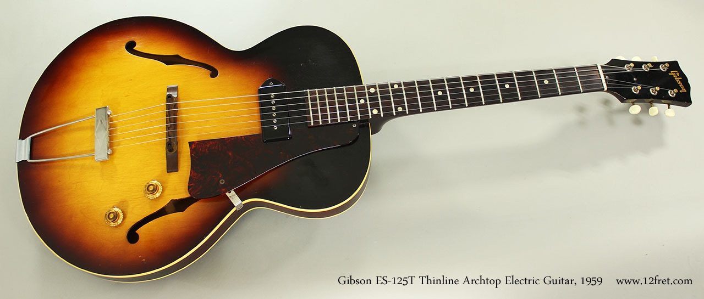

Stephen Ray Vaughan (October 3, 1954 – August 27, 1990) was an American musician, singer, songwriter, and record producer, and one of the most influential guitarists in the revival of blues in the 1980s. He is commonly referred to as one of, if not the greatest guitar player of all time. Vaughan was born and raised in Dallas, Texas. He began playing guitar at the age of seven, inspired by his older brother Jimmie. He dropped out of high school in 1971 and moved to Austin the following year. He played gigs with numerous bands, earning a spot in Marc Benno's band the Nightcrawlers and later with Denny Freeman in the Cobras, with whom he continued to work through late 1977. He then formed his own group Triple Threat Revue, but he renamed them Double Trouble after hiring drummer Chris Layton and bassist Tommy Shannon. He gained fame after his performance at the Montreux Jazz Festival in 1982, and his debut studio album Texas Flood charted at number 38 in 1983, a commercially successful release that sold over half a million copies. He headlined concert tours with Jeff Beck in 1989 and Joe Cocker in 1990, but he died in a helicopter crash on August 27, 1990 at the age of 35. It was 36 days before his 36th birthday. Vaughan received several music awards during his lifetime and posthumously. In 1983, readers of Guitar Player voted him Best New Talent and Best Electric Blues Guitar Player. In 1984, the Blues Foundation named him Entertainer of the Year and Blues Instrumentalist of the Year, and in 1987, Performance Magazine honored him with Rhythm and Blues Act of the Year. He won six Grammy Awards and ten Austin Music Awards and was inducted posthumously into the Blues Hall of Fame in 2000 and the Musicians Hall of Fame in 2014. Rolling Stone ranked him as the 12th greatest guitarist of all time.In 2015, Vaughan and Double Trouble were inducted into the Rock and Roll Hall of Fame.
Vaughan's ancestry has been traced back to his great-grandfather, Robert Hodgen LaRue. Robert LaRue had a daughter named Laura Belle, Vaughan's paternal grandmother. She married Thomas Lee Vaughan and moved to Rockwall County, Texas, where they lived by sharecropping.[5][nb 1] On September 6, 1921, they had a son named Jimmie Lee Vaughan. Steve's father Jim Vaughan, also known as Big Jim, dropped out of school at age sixteen, and enlisted in the United States Navy during World War II. After his discharge, he married Martha Cook on January 13, 1950. Stephen Ray Vaughan was born on October 3, 1954, in Dallas, Texas; he was three-and-a-half years younger than his brother Jimmie (born 1951). Big Jim secured a job as an asbestos worker, an occupation that involved rigorous manual effort. The family moved frequently, living in other states such as Arkansas, Louisiana, Mississippi, and Oklahoma before ultimately moving to the Oak Cliff section of Dallas. A shy and insecure boy, Vaughan was deeply affected by his childhood experiences. His father struggled with alcohol abuse, and often terrorised his family and friends with his bad temper. In later years, Vaughan recalled that he had been a victim of his father's violence. His father died on August 27, 1986, exactly four years before Vaughan's own death.
In the early 1960s, Vaughan's admiration for his brother Jimmie resulted in him trying different instruments such as the drums and saxophone.In 1961, for his seventh birthday, Vaughan received his first guitar, a toy from Sears with Western motif. Learning by ear, he diligently committed himself, following along to songs by the Nightcaps, particularly "Wine, Wine, Wine" and "Thunderbird". He listened to blues artists such as Albert King, Otis Rush, and Muddy Waters, and rock guitarists such as Jimi Hendrix and Lonnie Mack, as well as jazz guitarists including Kenny Burrell. In 1963, he acquired his first electric guitar, a Gibson ES-125T, as a hand-me-down from Jimmie. Soon after he acquired the electric guitar, Vaughan joined his first band, the Chantones, in 1965. Their first gig was at a talent contest held in Dallas' Hill Theatre, but after realizing that they could not perform a Jimmy Reed song in its entirety, Vaughan left the band and joined the Brooklyn Underground, playing professionally at local bars and clubs. He received Jimmie's Fender Broadcaster, which he later traded for an Epiphone Riviera. When Jimmie left home at age sixteen, Vaughan's apparent obsession with the instrument caused a lack of support from his parents. Miserable at home, he took a job at a local hamburger stand, where he washed dishes and dumped trash for seventy cents an hour. After falling into a barrel of grease, he grew tired of the job and quit to devote his life to a music career.
In May 1969, after leaving the Brooklyn Underground, Vaughan joined a band called the Southern Distributor. He had learned The Yardbirds' "Jeff's Boogie" and played the song at the audition. Mike Steinbach, the group's drummer, commented: "The kid was fourteen. We auditioned him on 'Jeff's Boogie,' really fast instrumental guitar, and he played it note for note."Although they played pop rock covers, Vaughan conveyed his interest in the addition of blues songs to the group's repertoire; he was told that he wouldn't earn a living playing blues music and the band parted ways. Later that year, bassist Tommy Shannon walked into a Dallas club and heard Vaughan playing guitar. Fascinated by the skillful playing, which he described as "incredible even then", Shannon borrowed a bass guitar and the two jammed. Within a few years, they began performing together in a band called Krackerjack. In February 1970, Vaughan joined a band called Liberation, which was a nine-piece group with a horn section. Having spent the past month briefly playing bass with Jimmie in Texas Storm, he had originally auditioned as bassist. Impressed by Vaughan's guitar playing, Scott Phares, the group's original guitarist, modestly became the bassist.In mid-1970, they performed at the Adolphus Hotel in downtown Dallas, where ZZ Top asked them to perform. During Liberation's break, Vaughan jammed with ZZ Top on the Nightcaps song "Thunderbird". Phares later described the performance: "they tore the house down. It was awesome. It was one of those magical evenings. Stevie fit in like a glove on a hand." Attending Justin F. Kimball High School during the early 1970s, Vaughan's late-night gigs contributed to his neglect in his studies, including music theory; he would often sleep during class. His musical career pursuit was disapproved by many of the school's administrators but he was also encouraged by many people, including his art teacher, to strive for a career in art.In his sophomore year, he attended an evening class for experimental art at Southern Methodist University, but left when it conflicted with rehearsal. Vaughan later spoke of his dislike of the school and stated he had to receive a daily note from the principal about his grooming.
Alpine Valley Resort in East Troy, Wisconsin, to travel to Midway International Airport in Chicago, after he concluded an all-star encore jam session at Alpine Valley Music Theatre. A return flight was scheduled for later that night, but when the encore finished, Vaughan was eager to return to Chicago and made the decision to leave immediately. The designated helicopter originally had three seats available, but Vaughan ultimately took the last remaining seat. The helicopter crashed into a nearby ski hill shortly after takeoff. Vaughan and the four others on board - pilot Jeff Brown, agent Bobby Brooks, bodyguard Nigel Browne, and tour manager Colin Smythe - were all killed. Most fans in the area were unaware of the initial impact, but according to a catering director at the resort, she remembered hearing a boom and felt her trailer shake. The helicopter was identified as being owned by Chicago-based company Omniflight Helicopters. Initial reports of the crash falsely claimed that Clapton had also been killed in the accident. According to findings from an inquest conducted by the coroner's office in Elkhorn, Vaughan suffered from "massive internal and skull injuries", in addition to severe trauma and rib fractures. The coroner theorized that all five victims were killed instantly, given the severity of their injuries. The bodies were taken to the morgue at Lakeland Medical Center in Elkhorn, where they were kept for relatives and friends to help identify them. As the subsequent investigation determined, when the aircraft departed, it was operated in foggy weather conditions and visibility was reportedly under two miles, according to a local forecast. The National Transportation Safety Board report stated: "As the third helicopter was departing, it remained at a lower altitude than the others, and the pilot turned southeasterly toward rising terrain. Subsequently, the helicopter crashed on hilly terrain about three-fifths of a mile from the takeoff point." It indicated that the pilot was not qualified to fly the helicopter in foggy weather conditions at night (instrument meteorological conditions). Brown's Federal Aviation Administration (FAA) records showed that he was qualified to fly by instruments in an airplane, but not in a helicopter. Toxicology tests performed on the victims revealed no traces of drugs or alcohol in their systems. Vaughan's funeral services were held on August 31, 1990, at Laurel Land Cemetery in Dallas, Texas. His body was set in a wooden casket that quickly became adorned with bouquets of flowers, which was carried in a white hearse. An estimated 3,000 mourners were in attendance at the procession. Among attendees at the public ceremony were Jeff Healey, Charlie Sexton, ZZ Top, Colin James, Stevie Wonder, Bonnie Raitt and Buddy Guy. Vaughan was entombed under a grave marker that reads: "Thank you... for all the love you passed our way."